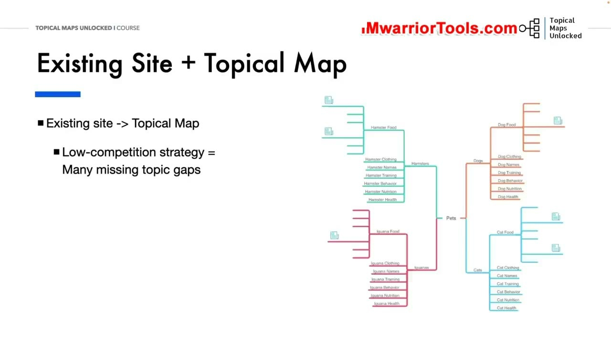
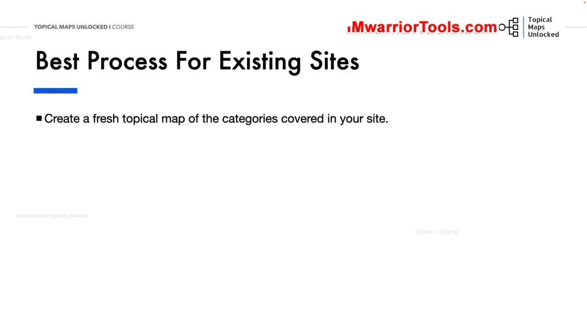
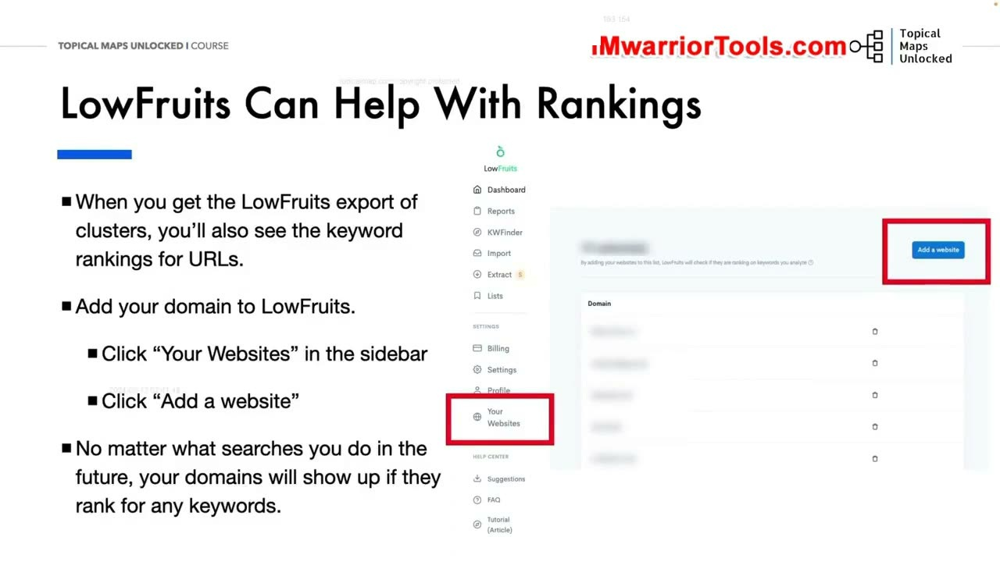
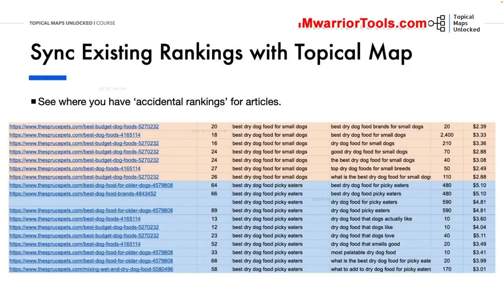

Existing Sites and Topical Maps
1. Thực trạng của các Website hiện có: Sự hỗn loạn của chiến lược cạnh tranh thấp
Trong bài học này, Yoyao thảo luận về một bài toán thực tế vô cùng phổ biến: Áp dụng Topical Map cho các Website đang hoạt động (Existing Sites). Khi tiếp nhận một trang web đã hoạt động nhiều năm, người làm SEO thường nhìn thấy một bức tranh hỗn loạn:
- Chủ sở hữu website trước đây thường áp dụng chiến lược "săn lùng từ khóa có độ cạnh tranh thấp" (Low-competition strategy): Cứ thấy từ khóa nào dễ là viết bài, không cần biết nó có nằm trong một cấu trúc chủ đề logic hay không.
- Hậu quả nhãn tiền là trang web xuất hiện vô số khoảng trống chủ đề (Topic gaps) nghiêm trọng. Các bài viết nằm rải rác như những hòn đảo cô lập, thiếu các trang trụ cột kết nối và thường xuyên xảy ra tình trạng ăn thịt từ khóa (Keyword cannibalization) khi nhiều bài viết cùng đề cập đến những khía cạnh na ná nhau.

2. Quy trình chuẩn cho Website hiện có: Lập bản đồ mới và Kiểm toán toàn diện
Yoyao khẳng định quy trình xử lý chuẩn xác nhất cho các website hiện có bao gồm 2 giai đoạn:
- Tạo một bản đồ chủ đề mới tinh (Fresh Topical Map): Đừng cố chắp vá trên cấu trúc cũ! Hãy tạm thời bỏ qua các bài viết hiện tại và xây dựng một Topical Map chuẩn mực hoàn chỉnh từ đầu cho tất cả các danh mục và sản phẩm cốt lõi của website. Bản đồ mới này đóng vai trò là một thước đo tham chiếu lý tưởng (Ideal benchmark).
- Kiểm toán lại toàn bộ bài viết hiện có (Audit Your Existing Sites): Liệt kê danh sách tất cả các từ khóa và bài viết đã xuất bản trong quá khứ, sau đó tiến hành đối chiếu và ánh xạ (map) từng bài viết đó vào đúng vị trí tương ứng trên bản đồ chủ đề mới.
Nhờ quy trình này, bạn sẽ nhìn thấy ngay lập tức: Những nhánh chủ đề nào website đã làm tốt, những khoảng trống nào cần viết bổ sung, và những bài viết nào đang bị trùng lặp cần phải sáp nhập (merge) hoặc chuyển hướng 301.

3. Khai thác tính năng Your Websites của LowFruits để đồng bộ thứ hạng thực tế
Để tự động hóa khâu kiểm toán thứ hạng cho website hiện có, LowFruits cung cấp một tính năng cực kỳ đắt giá mang tên Your Websites:
- Tại thanh bên trái của LowFruits, bạn nhấp vào mục Your Websites và bấm Add a website để thêm tên miền của bạn vào hệ thống.
- Kể từ thời điểm đó, bất kỳ khi nào bạn chạy các báo cáo phân tích hoặc phân cụm từ khóa, LowFruits sẽ tự động quét cơ sở dữ liệu và hiển thị ngay một cột riêng cho biết tên miền của bạn đã có thứ hạng (ranking) cho từ khóa đó hay chưa và đang đứng ở vị trí thứ mấy!
Tính năng này giúp bạn phát hiện ra những "thứ hạng vô tình" (Accidental rankings): Những từ khóa mà bạn chưa từng chủ đích tối ưu nhưng bài viết cũ vẫn vô tình xếp hạng trang 2 hoặc trang 3. Đây chính là những cơ hội cải thiện nhanh nhất: Bạn chỉ cần cập nhật nội dung, bổ sung thực thể và tối ưu lại On-page là bài viết sẽ lập tức nhảy vọt lên Top 5 Google.

4. Đồng bộ thứ hạng cũ vào Bảng tính Topical Map và Lên kế hoạch tái cấu trúc
Sau khi đã xuất dữ liệu phân tích từ LowFruits, bạn sao chép các đường dẫn URL và vị trí thứ hạng thực tế vào hai cột URL và Position trên bảng tính Topical Map.
Lúc này, bạn có trong tay một bản kế hoạch hành động tổng thể hoàn hảo:
- Đối với các từ khóa đã có thứ hạng tốt (Top 1–3): Giữ nguyên và bảo vệ thứ hạng.
- Đối với các từ khóa đang xếp hạng trang 2–3: Lên lịch trình tối ưu hóa và liên kết nội bộ bổ trợ.
- Đối với các ô còn trống hoàn toàn: Lên kế hoạch sản xuất bài viết mới để lấp đầy khoảng trống thẩm quyền của Silo.

Nguồn và đối chiếu
- Topical Maps Unlocked 2.0 · 02-Existing Sites and Topical Maps (Video bài học chính).
- Đối chiếu ngữ nghĩa với bản tiếng Anh: Bản Tiếng Anh/07-Content Planning Module/02-Existing Sites and Topical Maps.mp4.